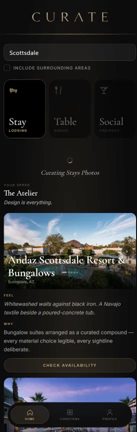

By invitation only
You already know what you like. You just keep having to prove it to a search box. Nine questions, about two minutes — then every search returns three to five places chosen for how you like a room to feel, each with the reason it is yours.
Two minutes now, and you stop researching for good.
Start here — 9 questions, about 2 minutes
Question 1 of 9
The whole tab, before wine gets ambitious.
A rough count is fine.
This sets the shelf we curate from.
Business and personal together.
Thank you.
We read every application ourselves — there is no queue and no algorithm deciding this. You’ll hear back by email within 24 hours, and always within two business days.
If it’s a fit, that email carries your invitation and a link to take the Speed quiz. Membership is $299 a year, and nothing is charged unless you accept it.
In the meantime, watch for a note from invitations@curatevip.ai.
No payment. Nothing is charged unless you accept an invitation.
We never sell your details. Privacy Policy.
Every venue corroborated against independent guides and award bodies
No paid placements, ever.

What you actually get
Not a ranked list of everything in the city. A short answer you can act on, written for how you travel.
Your Speed
The quiz places you in one Speed per category. It is what every curation you receive afterwards is built on.
Where it works today
We open a city only once there is enough corroborated depth in it to be worth a membership. Depth varies — the two newest are marked.
What it costs
$299A year · By invitation
Nine short questions, starting with where you call home. About two minutes.
Request an InvitationNo payment. Nothing is charged unless you accept an invitation.